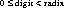

Packages This Package Prev Next Index
§1.2 Class Character
public final class java.lang.Character
extends java.lang.Object (I-§1.12)
{
// Fields
public final static int MAX_RADIX; §1.2.1
public final static char MAX_VALUE; §1.2.2
public final static int MIN_RADIX; §1.2.3
public final static char MIN_VALUE; §1.2.4
// Constructors
public Character(char value); §1.2.5
// Methods
public char charValue(); §1.2.6
public static int digit(char ch, int radix); §1.2.7
public boolean equals(Object obj); §1.2.8
public static char forDigit(int digit, int radix); §1.2.9
public int hashCode(); §1.2.10
public static boolean isDefined(char ch); §1.2.11
public static boolean isDigit(char ch); §1.2.12
public static boolean isJavaLetter(char ch); §1.2.13
public static boolean isJavaLetterOrDigit(char ch); §1.2.14
public static boolean isLetter(char ch); §1.2.15
public static boolean isLetterOrDigit(char ch); §1.2.16
public static boolean isLowerCase(char ch); §1.2.17
public static boolean isSpace(char ch); §1.2.18
public static boolean isTitleCase(char ch); §1.2.19
public static boolean isUpperCase(char ch); §1.2.20
public static char toLowerCase(char ch); §1.2.21
public String toString(); §1.2.22
public static char toTitleCase(char ch); §1.2.23
public static char toUpperCase(char ch); §1.2.24
}
This class wraps a value of the primitive type char in an object. An object of type Character
contains a single field whose type is char.
In addition, this class provides a number of methods for determining the type of a character, and converting characters from uppercase to lowercase and vice versa.
Many of the methods of class Character are defined in terms of a "Unicode attribute table"
that specifies a name for every defined Unicode code point. The table also includes other
attributes, such as a decimal value, an uppercase equivalent, a lowercase equivalent, and/or
a titlecase equivalent. The Unicode attribute table is available on the World Wide Web as
the file

MAX_RADIX
public final static int MAX_RADIX = 36
- The constant value of this field is the largest value permitted for the radix
argument in radix-conversion methods such as the digit (I-§1.2.7) method,
the forDigit (I-§1.2.9) method, and the toString (I-§1.8.21) method of class
Integer.
MAX_VALUE1
public final static char MAX_VALUE = '\uffff'
- The constant value of this field is the largest value of type char.
MIN_RADIX
public final static int MIN_RADIX = 2
- The constant value of this field is the smallest value permitted for the radix
argument in radix-conversion methods such as the digit (I-§1.2.7) method,
the forDigit (I-§1.2.9) method, and the toString (I-§1.8.21) method of class
Integer.
MIN_VALUE2
public final static char MIN_VALUE = '\u0000'
- The constant value of this field is the smallest value of type char.

Character
public Character(char value)
- Constructs a Character object and initializes it so that it represents the primitive value argument.
- Parameters:
value
- value for the new Character object

charValue
public char charValue()
- Returns:
- The primitive char value represented by this object.
digit
public static int digit(char ch, int radix)
- Returns the numeric value of the character ch in the specified radix.
- If the radix is not in the range or
if the ch is not a valid digit in the specified radix, -1 is returned. A character
is a valid digit if either of the following is true:
- The method isDigit (I-§1.2.12) is true of the character and the Unicode
decimal digit value of the character (or its single-character decomposition)
is less than the specified radix. In this case the decimal digit value is
returned.
- Parameters:
ch
- the character to be converted
radix
- the radix
- Returns:
- the numeric value represented by the character in the specified radix.
- See Also:
- forDigit (I-§1.2.9).
equals
public boolean equals(Object obj)
- The result is true if and only if the argument is not null and is a Character
object that represents the same char value as this object.
- Parameters:
obj
- the object to compare with
- Returns:
- true if the objects are the same; false otherwise.
- Overrides:
- equals in class Object (I-§1.12.3).
forDigit
public static char forDigit(int digit, int radix)
- Determines the character representation for a specific digit in the specified
radix. If the value of radix is not a valid radix, or the value of digit is not a
valid digit in the specified radix, the null character ('\u0000') is returned.
- The radix argument is valid if it is greater than or equal to MIN_RADIX
(I-§1.2.3) and less than or equal to MAX_RADIX (I-§1.2.1). The digit argument is valid if .
- If the digit is less than 10, then
 is returned. Otherwise, the
value
is returned. Otherwise, the
value  is returned.
is returned.
- Parameters:
digit
- the number to convert to a character
radix
- the radix.
- Returns:
- the char representation of the specified digit in the specified radix.
- See Also:
- digit (I-§1.2.7).
hashCode
public int hashCode()
- Returns:
- a hash code value for this object.
- Overrides:
- hashCode in class Object (I-§1.12.6).
isDefined3
public static boolean isDefined(char ch)
- Determines if a character has a defined meaning in Unicode. A character is
defined if at least one of the following is true:
- Parameters:
ch
- the character to be tested
- Returns:
- true if the character has a defined meaning in Unicode; false otherwise.
isDigit4
public static boolean isDigit(char ch)
- Determines whether the specified character is a digit. A character is considered to be a digit if it is not in the range '\u2000' through '\uu2000' and its
Unicode name contains the word "DIGIT".
- Parameters:
ch
- the character to be tested
- Returns:
- true if the character is a digit; false otherwise.
isJavaLetter5
public static boolean isJavaLetter(char ch)
- Determines whether the specified character is a "Java" letter, that is, the
character is permissible as the first character in an identifier in the Java
language..
- A character is considered to be a Java letter if and only if it is a letter, the
ASCII dollar sign character '$', or the underscore character '_'.
- Parameters:
ch
- the character to be tested
- Returns:
- true if the character is a Java letter; false otherwise.
- See Also:
- isLetter (I-§1.2.15)
isLetterOrDigit (I-§1.2.16)
isJavaLetterOrDigit (I-§1.2.14).
isJavaLetterOrDigit6
public static boolean isJavaLetterOrDigit(char ch)
- Determines whether the specified character is a "Java" letter or digit, that
is, the character is permissible as a non-initial character in an identifier in
the Java language..
- A character is considered to be a Java letter or digit if and only if it is a letter, a digit, the ASCII dollar sign character '$', or the underscore character
'_'.
- Parameters:
ch
- the character to be tested
- Returns:
- true if the character is a Java letter or digit; false otherwise.
- See Also:
- isLetter (I-§1.2.15)
isLetterOrDigit (I-§1.2.16)
isJavaLetter (I-§1.2.13).
isLetter
public static boolean isLetter(char ch)
- Determines whether the specified character is a letter.
- Note to the editor. Guy's book describes letter and letter/digit in excruciating detail. Do I need to do so also?
- Parameters:
ch
- the character to be tested
- Returns:
- true if the character is a letter; false otherwise.
- See Also:
- isJavaLetter (I-§1.2.13)
isJavaLetterOrDigit (I-§1.2.14).
isLetterOrDigit7
public static boolean isLetterOrDigit(char ch)
- Parameters:
ch
- the character to be tested
- Returns:
- true if the character is a letter or digit; false otherwise.
- See Also:
- isDigit (I-§1.2.12)
isLetter (I-§1.2.15)
isJavaLetter (I-§1.2.13)
isJavaLetterOrDigit (I-§1.2.14).
isLowerCase8
public static boolean isLowerCase(char ch)
- Determines whether the specified character is a lowercase character.
- A character is lowercase if it is not in the range '\u2000' through '\u2FFF', the
Unicode attribute table does not specify a mapping to lowercase for the
character, and at least one of the following is true:
- Parameters:
ch
- the character to be tested
- Returns:
- true if the character is lowercase; false otherwise.
- See Also:
- isUpperCase (I-§1.2.20)
isTitleCase (I-§1.2.19)
toLowerCase (I-§1.2.21).
isSpace
public static boolean isSpace(char ch)
- Determines if a character is white space.
- This method returns true for the following five characters only:
- '\t' \u0009 HORIZONTAL TABULATION
'\n' \u000A NEW LINE
'\f' \u000C FORM FEED
'\r' \u000D CARRIAGE RETURN
' ' \u0020 SPACE
- Parameters:
ch
- the character to be tested
- Returns:
- true if the character is ISO-LATIN-1 white space; false otherwise.
isTitleCase9
public static boolean isTitleCase(char ch)
- Determines if the character is a titlecase character.
- There are four Unicode characters whose printed representations look like
pairs of Latin letters. For example, there is an uppercase letter that looks
like "LJ" and the corresponding lowercase letter looks like "lj". A third
form, which looks like "Lj" that is the appropriate form to use when rendering a word in lowercase with initial capitals, as for a book title.
- These are the Unicode characters for which this method returns true:
- Parameters:
ch
- the character to be tested
- Returns:
- true if the character is titlecase; false otherwise.
- See Also:
- isUpperCase (I-§1.2.20)
isLowerCase (I-§1.2.17)
toTitleCase (I-§1.2.23).
isUpperCase10
public static boolean isUpperCase(char ch)
- Determines whether the specified character is an uppercase character.
- A character is uppercase if it is not in the range '\u2000' through '\u2FFF', the
Unicode attribute table does not specify a mapping to uppercase for the
character, and at least one of the following is true:
- Parameters:
ch
- the character to be tested
- Returns:
- true if the character is uppercase; false otherwise.
- See Also:
- isLowerCase (I-§1.2.17)
isTitleCase (I-§1.2.19)
toUpperCase (I-§1.2.24).
toLowerCase11
public static char toLowerCase(char ch)
- The given character is mapped to its lowercase equivalent; if the character
has no lowercase equivalent, the character itself is returned.
- A character has a lowercase equivalent if and only if a lowercase mapping
is specified for the character in the Unicode attribute table.
- Note that some Unicode characters in the range '\u2000' through '\u2FFF'
have lowercase mappings; this method does map such characters to their
lowercase equivalents even though the method isUpperCase (I-§1.2.20) does
not return true for such characters.
- Parameters:
ch
- the character to be converted
- Returns:
- the lowercase equivalent of the character, if any; otherwise the character itself.
- See Also:
- isLowerCase (I-§1.2.17).
toString
public String toString()
- Converts this Character object to a string. The result is a string whose length
is 1 and whose sole component is the primitive char value represented by
this object.
- Returns:
- a string representation of this object.
- Overrides:
- toString in class Object (I-§1.12.9).
toTitleCase12
public static char toTitleCase(char ch)
- Converts the character argument to titlecase. A character has a titlecase
equivalent if and only if a titlecase mapping is specified for the character
in the Unicode attribute table.
- Note that some Unicode characters in the range '\u2000' through '\u2FFF'
have titlecase mappings; this method does map such characters to their
titlecase equivalents even though the method isTitleCase (I-§1.2.19) does
not return true for such characters.
- Parameters:
ch
- the character to be converted
- Returns:
- the titlecase equivalent of the character, if any; otherwise the character
itself.
- See Also:
- isTitleCase (I-§1.2.19).
toUpperCase13
public static char toUpperCase(char ch)
- Converts the character argument to uppercase. A character has an uppercase equivalent if and only if a titlecase mapping is specified for the character in the Unicode attribute table.
- Note that some Unicode characters in the range '\u2000' through '\u2000FFF'
have uppercase mappings; this method does map such characters to their
titlecase equivalents even though the method isLowerCase (I-§1.2.17) does
not return true for such characters.
- Parameters:
ch
- the character to be converted
- Returns:
- the uppercase equivalent of the character, if any; otherwise the character itself.
- See Also:
- isUpperCase (I-§1.2.20).
1
This field is new in Java 1.1.
2
This field is new in Java 1.1.
3
This method is new in Java 1.1.
4
In Version 1.0, this version returns true only for the ten ASCII digits `0' through
'9'.
5
This method is new in Java 1.1
6
This method is new in Java 1.1
7
This method is new in Java 1.1
8
In Version 1.0, this version returns true only for lowercase characters in the range
'\u0000' to '\u00FF'.
9
This method is new in Java 1.1.
10
In Java 1.0, this method returns true only for uppercase characters in the range
'\u0000' to '\u00FF'.
11
In Java 1.0, this method only works on characters in the range '\u0000' to '\u00FF'.
For characters outisde this range, the method returns its argument unchanged.
12
This method is new in Java 1.1
13
In Java 1.0, this method only works on characters in the range '\u0000' to '\u00FF'.
For characters outside this range, the method returns its argument unchanged.
Packages This Package Prev Next Index
Java API Document (HTML generated by dkramer on April 22, 1996)
Copyright © 1996 Sun Microsystems, Inc.
All rights reserved
Please send any comments or corrections to doug.kramer@sun.com
 . In this case, is returned.
. In this case, is returned.
 . In this case, is returned.
. In this case, is returned.